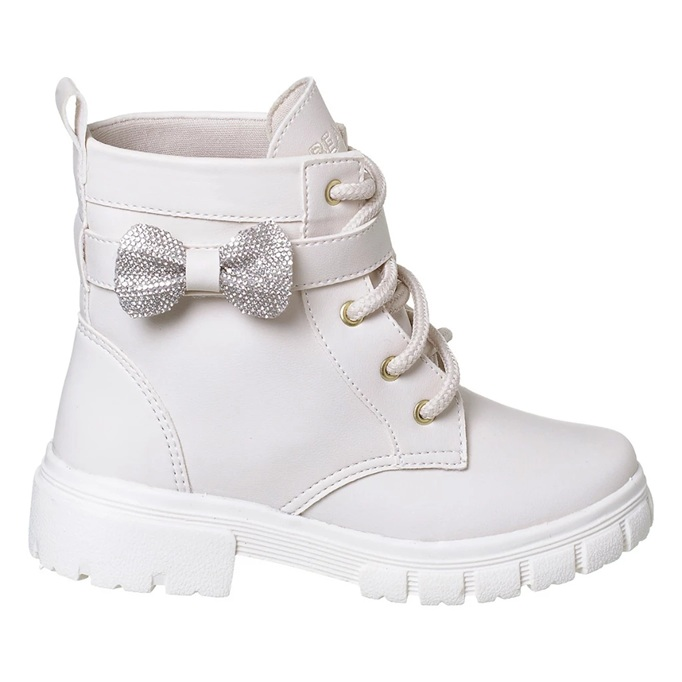

Botas · Meninas
Coturno 3 em 1 Beakid Bota Infantil Menina — Off White, Lisa/Com Laço/Com Tira
Ver preço na loja
Tamanhos
282930313233343536
Coturno 3 em 1 Beakid Bota Infantil Menina — Off White, Lisa/Com Laço/Com Tira é uma bota infantil para meninas da BEAKID.
Tamanhos disponíveis: 28, 29, 30, 31, 32, 33, 34, 35, 36. As compras são finalizadas nos marketplaces oficiais da BEAKID, com envio para todo o Brasil.
A compra é finalizada na Shopee ou no Mercado Livre. Preço e disponibilidade podem mudar na loja.
← Voltar ao catálogo BEAKID